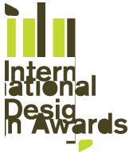
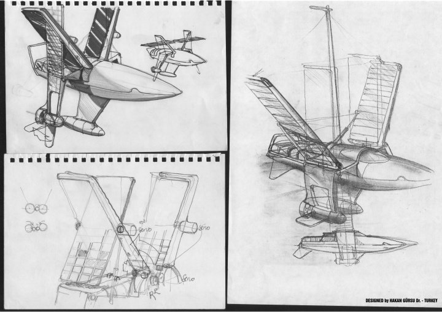
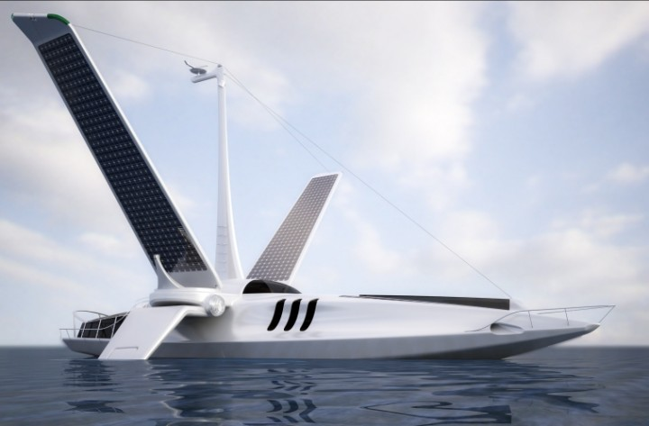
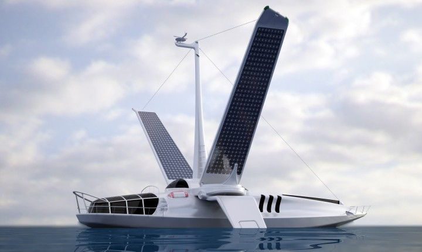

Dr. Hakan Gürsu ve dört genç tasarýmcýyla birlikte Ankara'da kurulan ve mobilyadan zýrhlý askeri araca kadar pek çok farklý proje üzerinde çalýþan Designnobis, en son projeleri Volitan isimli tekneyle, NewYork'ta 32 ülkeden binin üzerinde projenin yer aldýðý organizasyonda, "En iyi tekne tasarýmý" ve "Yýlýn en iyi ulaþým aracý" olmak üzere iki birincilik kazandý.
New York'da her yýl düzenlenen Uluslararasý Tasarým Ödülleri (IDA - www.idesignawards.com) Dünya'nýn en saygýn endüstriyel tasarým yarýþmalarýndan biri olarak kabul ediliyor ve ödülleri yýlýn tasarým oscarlarý olarak deðerlendiriliyor. Bu yýl IDA 2007'ye 32 ülkeden 1000'in üzerinde proje katýldý ve eserler dünyanýn önde gelen tasarýmcýlarýndan oluþan büyük jüri tarafýndan deðerlendirildi (www.idesignawards.com/winner/07/...).
IDA 2007'de ODTÜ öðretim üyesi ve endüstri ürünleri tasarýmcýsý, Dr. Hakan Gürsu ve yardýmcý tasarýmcý Sözüm Doðan tarafýndan (www.designnobis.com) gerçekleþtirilen "Volitan" adlý proje, geleceðin en yenilikçi ve çevreci teknesi olarak büyük jüri tarafýndan ürün tasarýmý ve ulaþým baþlýklarý altýnda iki birincilik ödülüne layýk görüldü.



Ýsmini Akdeniz uçan balýðýndan (Exocoetus volitans) alan Volitan, yeni nesil çevre dostu tekne tasarýmlarýnýn öncülerinden. Yaklaþýk 32 metre boyundaki yolcu teknesinin en önemli özelliði, rüzgar ve güneþ enerjisinden yararlanarak hareket etmesi. Teknenin kanat tasarýmý rüzgarda seyir olanaðý saðlarken, ayný zamanda kanat ve gövde üzerindeki güneþ panelleri yardýmýyla rüzgarsýz hava ya da gece hareket etmek için gereken enerji de bataryalarda Çevre dostu jel akülerde) depolanýyor. Bu amaçla her iki yanýnda yer alan 2 adet hareketli elektrik motoru ile desteklenen Volitan, deniz suyundan tatlý su çevrimini gerçekleþtirebiliyor ve karbondioksit üretmiyor. Volitan, yelkenlerinin tasarým þekli itibarý ile mevcut denge sorunlarýna getirdiði çözümlemeler baþta olmak üzere, tekne tasarýmýnda devrim kabul edilebilecek pek çok yeniliði içinde barýndýrmakta. Proje, geliþtirilme aþamasýnda Tübitak MAM/Ulusal Enerji Ajansý tarafýndan desteklenmiþ.
Volitan proje tanýtým videosu > volitan-low.wmv (4,8MB)
|